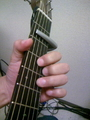
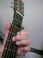
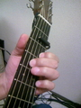

  
カポは普通は弾き語りの必需品だと思うけど、ピッチを保つのが難しいので、なるべく使わないようにしていた。 けど、あるとき、六弦だけ外してカポしてた人を見て、あ、これは使えるなとピンときた。で、早速挑戦。
写真左。六弦外して2カポ、EのときにDのフォームになって、しかも六弦開放の響きがある。1音上げたドロップDに近いんだけど、六弦を押さえるコードもフォームが変らないし、F#が使いたいときはそこを余計に押さえるだけ。
キーEのでこれが効果的な曲が多数あるだろうことは、ギター弾く人ならピンときていただけるかと。
これに味をしめて、他になんかないかと考えたら、五・六弦と外すのを思いついた。2カポで、こっちはAで6th、sus4なんかを混ぜたフォームで弾くのに使う。Gのフォームで弾くのもありあり。
しかし、同じように外してセットしてもテンションが足りなくてびびって使えない。試行錯誤して、結局、普通のカポの先を金ノコで切断、普通にセットすれば二本低音弦が外れる奴を作ってしまった。
これが写真右。いい感じ。
写真中は、いろいろ試してる途中で見つけたもの。セットすると、二・三・四弦だけ押さえてくれるカポ。自家製のと共通点が多いのだけど一弦が開放のままというのが違う。これはこれでまた何かに使えそうだな。
今のところ2カポでしか使ってないけど、他のポジションでも使えたりしないかなと模索中。といっても、いつも思いつきでしかやらないから、あえて研究とかはしてないけど。
しかし、われながら、結構楽しんでるかも、と思う。